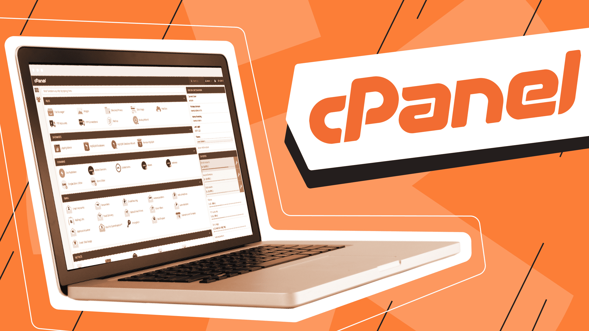

Pengantar Hosting
Hosting adalah layanan untuk menyimpan file dan data website agar bisa diakses melalui internet. File seperti gambar, kode, dan database disimpan di server yang selalu aktif 24 jam.
Jenis-jenis hosting yang umum digunakan:
- Shared Hosting: Paling terjangkau, berbagi server dengan pengguna lain.
- VPS Hosting: Server virtual dengan sumber daya terpisah.
- Dedicated Server: Satu server penuh untuk satu pengguna.
- Cloud Hosting: Menggunakan jaringan server cloud untuk performa lebih baik.
Hosting adalah fondasi utama bagi website — tanpa hosting, website tidak bisa diakses oleh pengguna di seluruh dunia.
Apa itu cPanel
cPanel adalah panel kontrol berbasis web untuk mengelola layanan hosting seperti file, database, domain, dan email dengan mudah. Dengan cPanel, pengguna tidak perlu menggunakan perintah Linux yang rumit untuk mengelola server, karena semuanya bisa dilakukan melalui tampilan antarmuka yang sederhana. 
🔧 Fungsi Utama cPanel
- Mengelola file website secara langsung
- Membuat dan mengatur database (MySQL)
- Mengelola akun email berbasis domain
- Menambah dan mengatur domain & subdomain
- Melakukan backup dan restore data
- Menginstal CMS (WordPress, Joomla, dll) dengan 1 klik
✅ Keunggulan cPanel
- Mudah digunakan dengan antarmuka grafis
- Fitur sangat lengkap dan terorganisir
- Didukung oleh hampir semua penyedia hosting
- Proses otomatisasi menghemat waktu
- Cocok untuk pemula maupun pengguna mahir
❌ Kekurangan cPanel
- Bersifat berbayar — biaya lisensi bisa cukup mahal
- Fitur terlalu banyak bisa membingungkan pemula
- Memakan cukup banyak resource server
🧾 Kesimpulan
cPanel adalah salah satu control panel hosting paling populer dan powerful. Dengan tampilan yang mudah dipahami dan fitur lengkap, cPanel sangat cocok untuk berbagai kebutuhan website. Meski tidak gratis, fungsinya sepadan dengan biaya yang dikeluarkan.